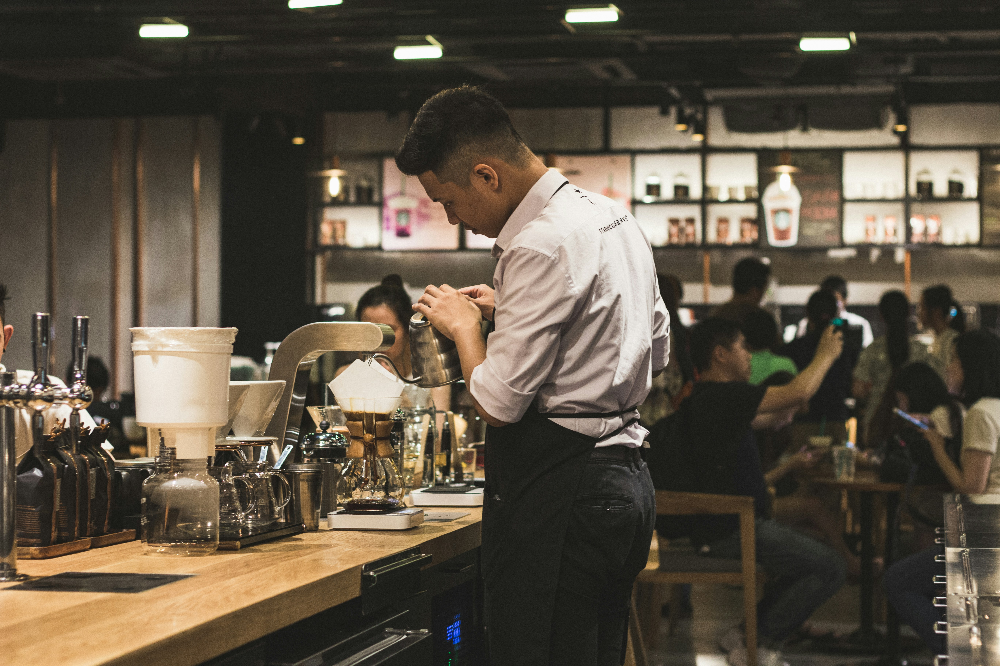

Sejarah Kopi
Cari tahu tentang sejarah kopi yang ada di dunia ini

Sejarah kopi diketahui sejak abad ke-15 di daerah Asia Tenggara, Indonesia terutama di wilayah Jawa, Maluku, Bali, dan Lombok. Pada awalnya kopi hanya adalah minuman yang berasal dari tumbukan bijih kopi (arabika) yang diminum oleh raja-raja atau keluarga pribadi. Namun, kopi semakin populer dan dikenal oleh orang lain seiring berjalanya. Copi (kopi) merupakan bahasa Jawa yang kemudian menjadi bahasa pemicu untuk kopi. Pada masa kolonialisme, kopi dimanfaatkan oleh perusahaan perkebunan kopi sebagai komoditas ekspor negara. Saat itu, kopi dinikmati oleh orang-orang dengan kualitas yang baik dan dengan teknik pemanisan yang lebih baik. Dengan adanya perusahaan perkebunan kopi, kopi menjadi minuman yang umum dikonsumsi oleh masyarakat umum.
Trending Kopi
Cari tahu tentang trending kopi yang ada di dunia ini
Kopi semakin populer dan dikenal oleh masyarakat seiring berjalanya. Kopi dinikmati oleh masyarakat umum dengan kualitas yang baik dan dengan teknik pemanisan yang lebih baik. Dengan adanya per businesses perkebunan kopi, kopi menjadi minuman yang umum dikonsumsi oleh masyarakat umum.
Interview Kopi
Cari tahu tentang interview kopi yang ada di dunia ini
Kopi semakin populer dan dikenal oleh masyarakat seiring berjalanya. Kopi dinikmati oleh masyarakat umum dengan kualitas yang baik dan dengan teknik pemanisan yang lebih baik. Dengan adanya per businesses perkebunan kopi, kopi menjadi minuman yang umum dikonsumsi oleh masyarakat umum.
Manfaat Kopi
Cari tahu tentang manfaat kopi yang ada di dunia ini
Kopi semakin populer dan dikenal oleh masyarakat seiring berjalanya. Kopi dinikmati oleh masyarakat umum dengan kualitas yang baik dan dengan teknik pemanisan yang lebih baik. Dengan adanya per businesses perkebunan kopi, kopi menjadi minuman yang umum dikonsumsi oleh masyarakat umum.